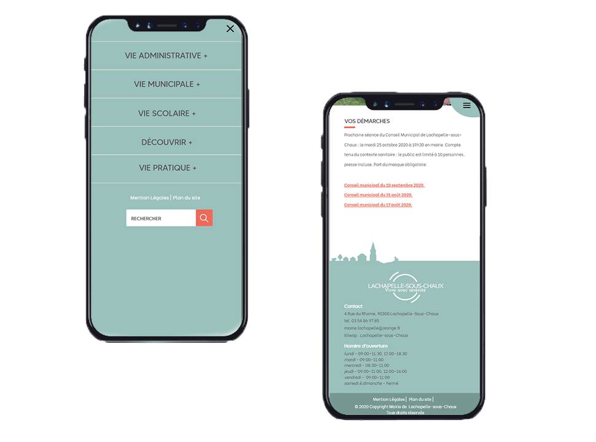
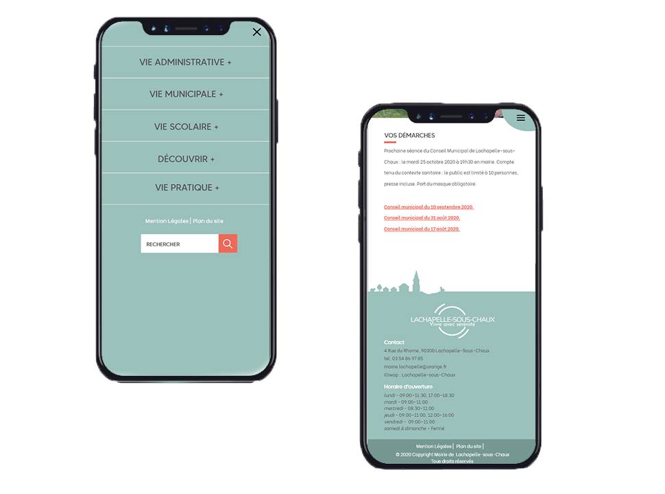

Mathilde
Vauquieres.
2020

Notre projet d'étude pour le troisième semestre du DUT Métiers du Multimédia et de l'Internet était de réaliser un projet pour un réel commanditaire. Nous avons choisit de faire la refont du site de la maire de Lachapelle-sous-Chaux, un petit village situé dans le territoire de Belfort. L'équipe de la mairie n'étant pas à l'aise avec les outils informatiques, il fallait rendre le backoffice de wordpress très accessible pour des débutant. Nous avons dû également fournir un mode d'emploi leur expliquant le fonctionnant de wordpress.
 

Pour ce projet, nous avons du recréer entièrement l'identité visuelle du site de la mairie. Nous avons commencé par chercher un logo à l'image du village : avec son calme, sa nature, son clocher. Après différentes propositions, l'équipe de la mairie à fait son choix final. Le nouveau logo est simple : le nom du village et son slogan entouré d'un cercle bleu qui rappelle ses nombreux étangs. Les deux traits plus clairs font références à la nature et aux promenades. Nous l'avons décliné avec et sans slogan, et en différentes teintes pour qu'il s'adapte aux différents couleurs de fond.
Pour l'harmonie colorée, nous avons hésité entre des couleurs vives mettant en avant le dynamisme de l'équipe municipale et du village en générale, et des couleurs pastels pour s'aligner avec l'image de village calme et rural. Finalement, nous avons opté pour un mélange des deux : une couleur dominante bleu clair, qui rappelle les étangs, l'eau, qui apaise. Et une tonique rouge vive, qui attire le regard et dynamise la page.


Le développement du site internet a été réalisé avec le CMS Wordpress. Nous avons choisit d'utiliser le thème Catmandu puisqu'il correspondait au design crée sur la maquette. Pour que l'équipe de la mairie puisse se servir du site par la suite, nous avons décidé d'utiliser le plug-in Elementor. Un site "mode d'emploi" a également été créer afin de guider l'équipe municipal à gérer le site. Celui-ci a été développé en HTML / CSS et comprends de nombreux tutoriels vidéos et écrit.
Nous avons exploré différentes pistes avec l'équipe municipale afin de créer de nouveaux moyens de communication. Étant contre la création de réseau sociaux, nous avons proposer différents moyens de communication hors ligne pour faire connaître le site, avec notamment la création d'affiches et flyers disposés aux endroits clés du village. Nous avons également mis en place une newsletters depuis le site internet.